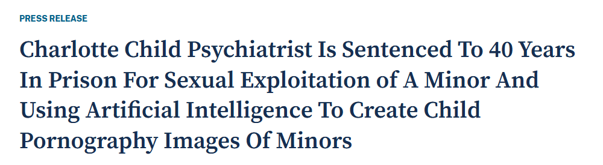

해외 · 셰어런팅 사진이 범죄로 이어진 사건
 IBTimes · 2015.9.30 · 호주
아동 성착취 사이트 사진의 절반이 페이스북에서
IBTimes · 2015.9.30 · 호주
아동 성착취 사이트 사진의 절반이 페이스북에서


미국 법무부 · 2023.11 학교 댄스 · 첫 등교일 사진을 AI로 변형 → 징역 40년
IBTimes · 2015.9.30 · 호주
아동 성착취 사이트 사진의 절반이 페이스북에서
NBC News · 2019.10 · 일본
셀카 눈동자에 비친 역으로 집을 찾아가 범행
(피해자는 성인)
셀카 눈동자에 비친 역으로 집을 찾아가 범행
(피해자는 성인)
국내 · 범죄 사례는 확인 못 함
"무슨 동네 사시네요"
같은 댓글이 달렸어요
같은 댓글이 달렸어요
직접 인터뷰 · 육아 · 교육 인플루언서
사는 곳 · 다니는 곳을 묻는 댓글 캡처[자료 필요]